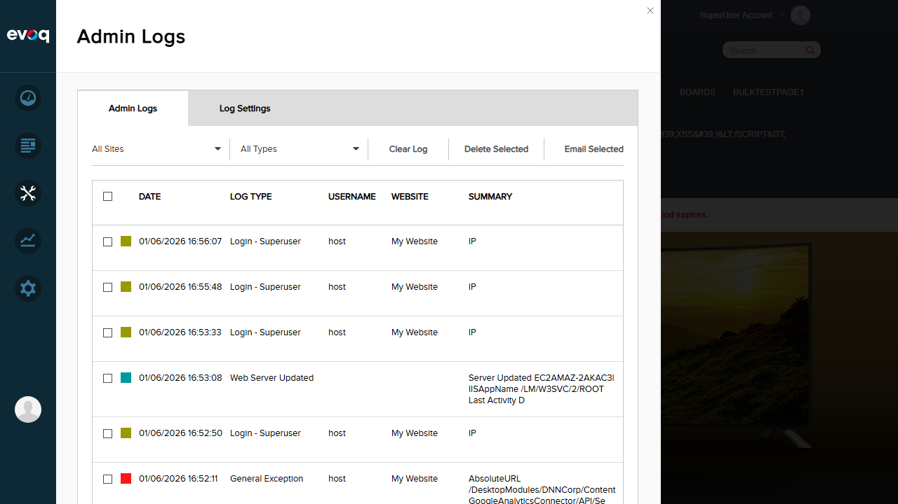
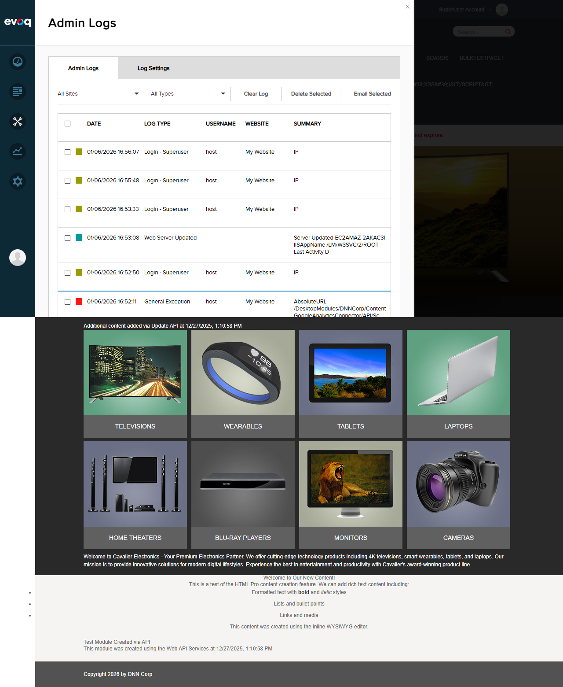

Method not found: 'System.Collections.Generic.IList`1<...> DotNetNuke.Services.Connections.IConnectionsManager.GetConnectors()'
ExceptionGUID
e3215f2d-af83-445a-87cc-a2846851d4fe
StackTrace
Full stack trace available showing call path through ServicesController.GetLocalizedString
Screenshots
Admin Logs showing Google Analytics Connector Exceptions:

Full Admin Logs View:

Observations
Retry Mechanism: Code review confirms that the GoogleAnalyticsRemoteRetryManager implements a retry policy using Polly library with 3 retry attempts for certain HTTP status codes. This could not be directly tested via UI without causing actual network failures.
Token Cache Management: On 401 Unauthorized responses, the code clears the token cache to allow re-authentication. This is implemented but would require specific authorization failure scenarios to test directly.
Info-level Logging: The code includes info-level logging for operations like "Initiating Google Analytics authorization from Remote for portal {portalId}" - these would appear in logs at debug/info level.
Error Toast Timing: The error toast notifications auto-dismiss quickly (approximately 2-3 seconds), which may make them difficult to capture in screenshots but provides good UX by not blocking the interface.
No Format Validation: The Measurement ID field does not validate the format of the entered value. This appears to be by design to support various GA measurement ID formats.
Conclusion
The Error Handling and Logging feature for the Google Analytics Connector is functioning correctly:
User-Friendly Messages: Clear validation messages are displayed to users (e.g., "Tracking Code Cannot Be Empty")
Success Feedback: Operations provide appropriate success messages
Comprehensive Logging: Errors are logged to Admin Logs with detailed information including stack traces, exception GUIDs, and source identification
Retry Logic: Code implements retry mechanism for transient failures (verified via code review)